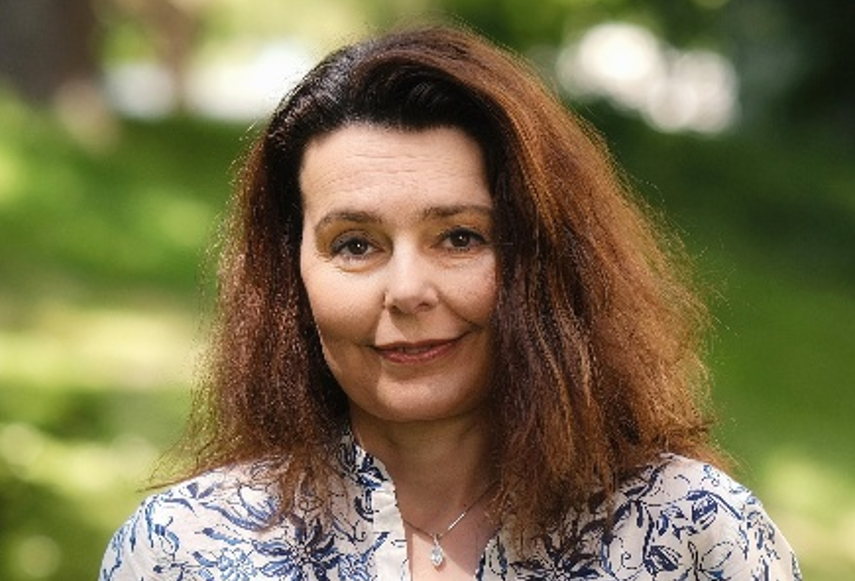
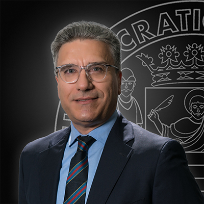
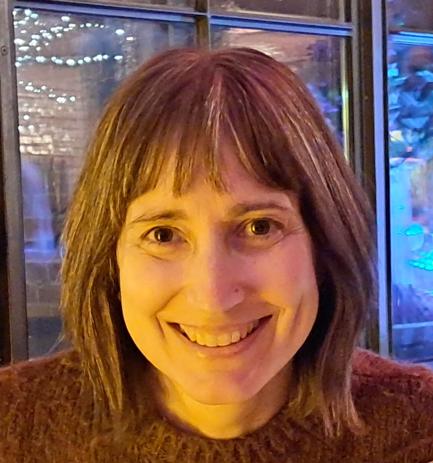

Plenary Speakers

Maria Kateri is professor at the RWTH Aachen University, Germany, holding the chair of Statistics and Data Science. She received a Diploma in Mathematics from the University of Ioannina, Greece, an MPhil in Statistics and Modelling Science from the University of Strathclyde in Glasgow, UK, and a PhD in Mathematics from the University of Ioannina. She has served as assistant and associate professor at the Department of Statistics and Insurance Science of the University of Piraeus, Greece, and as associate professor at the Department of Mathematics of the University of Ioannina. She develops statistical methodology motivated by complex data challenges across disciplines. Her research interests include the analysis of categorical and ordinal data, with a focus on model selection and high-dimensional settings. She also works in statistical information theory and reliability theory. She has contributed to the analysis of contingency tables and to modelling of ordinal data, employing tools of statistical information theory, algebraic statistics, and Bayesian approaches. Moreover, she works on accelerated life testing under censoring, being also involved in engineering applications. She is the author of a book on contingency table analysis, co-author of two books on the foundations of statistics for data scientists and on the foundations of Bayesian statistics for data scientists, and co-editor of a volume on trends and challenges in categorical data analysis. She has been Co-Editor-in-Chief of Metrika (Springer) since 2017.

Davy Paindaveine is a professor of Mathematical Statistics at the Université Libre de Bruxelles and a member of the Royal Academy of Science, Letters and Fine Arts of Belgium. He is also an Associate Member of the Toulouse School of Economics. He had part-time professor positions at the Université Pierre-et-Marie Curie (now, Sorbonne Université) and at the Toulouse School of Economics. He is a Fellow of the Institute of Mathematical Statistics, a Fellow of the American Statistical Association, and an elected member of the International Statistical Institute. His main research fields are asymptotic statistics, nonparametric inference, and high-dimensional statistics. He has acted as the Editor-in-Chief of Bernoulli, and as an Associate Editor of several journals, including the Annals of Statistics, the Journal of the American Statistical Association, and the Journal of the Royal Statistical Society - Series B. He obtained several awards, including the Gottfried E. Noether Young Scholar award of the American Statistical Association.

Antonio Di Crescenzo is Professor of Probability and Mathematical Statistics and a member of the Advisory Board of the PhD Program in Mathematics at the University of Salerno, Italy. He received a degree in Computer Science from the University of Salerno and a PhD in Applied Mathematics and Computer Science from the University of Naples Federico II.
He served as a member of the Evaluation Experts Group for Research Quality Assessment (Area 1: Mathematical and Computer Sciences) of the Italian National Agency for the Evaluation of Universities and Research. He has coordinated several research projects funded by the Italian Ministry of Education, University and Research.
His research focuses on the theory and simulation of stochastic processes, especially diffusion processes and finite-velocity random motions, with applications to biomathematical modeling and queueing systems. His interests also include reliability theory, biocybernetics, stochastic modeling, information measures, stochastic dependence, probabilistic extensions of the mean value theorem, and decision-making methods in forensic statistics.
He is the author of more than 100 scientific publications. He has contributed to the organization of several international conferences, participated in more than 80 international scientific meetings, and delivered invited plenary lectures. He serves on the editorial boards of Methodology and Computing in Applied Probability, Mathematics, AIMS Mathematics, Journal of Mathematics, and Scientiae Mathematicae Japonicae.

Ana Colubi is a visiting professor at King’s College London (UK) and Frederick University (Cyprus), and a full professor at the University of Oviedo (Spain), currently on leave. Her research spans probability theory, methodological and computational statistics, and applied data analysis. Her main research focus is on statistical methods for expert assessments and imprecise data represented through fuzzy sets, linking fuzzy data analysis with Hilbert-space-valued random elements and text data.
She has authored around 95 scientific publications (h-index 30), supervised seven PhD students, and delivered numerous invited seminars, keynote lectures, and conference presentations. She has led 12 research projects and participated in 15 others, co-organized more than 20 international conferences, and served on the scientific committees of many more.
She has chaired two COST Actions and coordinates the CMStatistics and CFEnetwork communities. She is co-editor of Computational Statistics and Data Analysis and Econometrics and Statistics, and has served as reviewer for more than 20 journals in statistics and information and communication technologies.
She was Chair of the European Board of Directors of the International Association for Statistical Computing (ERS-IASC) from 2014 to 2016.